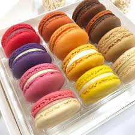

馬卡龍（macaron，法語發音：[makaʁɔ̃][1]），又稱作瑪卡龍、法式小圓餅 是一種用蛋白或aquafaba、糖粉、蔗糖、杏仁粉或杏仁霜以及食用色素製成的以蛋白脆餅為基礎的法式甜點， 通常在兩塊餅乾之間夾有甘納許、奶油乳酪或果醬等內餡。名稱源於義大利語單詞macarone、maccarone或maccherone 一種義大利蛋白脆餅。
是一種用蛋白或aquafaba、糖粉、蔗糖、杏仁粉或杏仁霜以及食用色素製成的以蛋白脆餅為基礎的法式甜點，
通常在兩塊餅乾之間夾有甘納許、奶油乳酪或果醬等內餡。名稱源於義大利語單詞macarone、maccarone或maccherone
一種義大利蛋白脆餅。